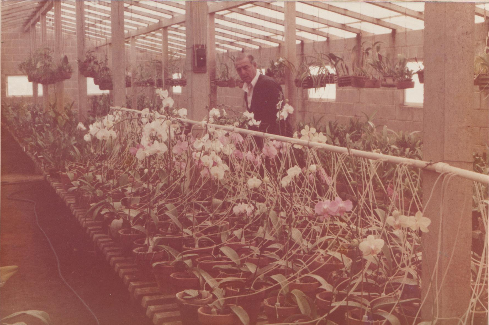

Nossa História
Algumas plantas não são apenas plantas. Elas carregam memória, afeto, cuidado e tempo.
O Aguatudo nasceu desse entendimento simples: cuidar de plantas é, muitas vezes, cuidar de histórias.

Uma herança de cuidado
Tudo começou no sítio do premiado orquidófilo Antonio Vendramin (1923–1996), no bairro Caxambu, em Jundiaí-SP.
Em seu orquidário, com quase 10 mil vasos de orquídeas, o cuidado com cada planta era levado a sério. Para isso, foi criado um sistema de irrigação com microtubos transparentes chegando a cada vaso — algo bastante inovador para os anos 1980.
Do orquidário ao Aguatudo
Décadas depois, essa mesma lógica de cuidado foi retomada e aprimorada pelo neto Fabio S. Vendramin.
O Aguatudo surge como a continuidade natural dessa história: unir tecnologia e sensibilidade para tornar o cuidado com plantas mais simples, confiável e previsível.
Ao longo do desenvolvimento, foram incorporadas soluções modernas, como firmware próprio e interface via smartphone, sempre com uma premissa clara: não complicar o que pode ser simples.
Por isso, o Aguatudo funciona sem depender de internet, resolve tudo com um único botão e mantém o controle nas mãos de quem cuida.
Mais do que um produto, o Aguatudo é a continuação de um cuidado que atravessa gerações — agora adaptado à vida contemporânea.
O cuidado continua — agora no seu quintal.
Primeiras 100 unidades a partir de 23 de novembro. Reservar não obriga a comprar.
Reservar o meu